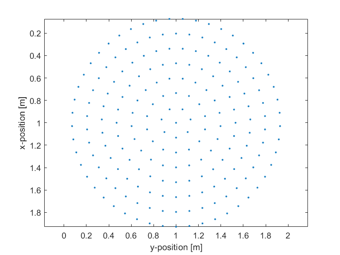

makeCartDisc
Create evenly distributed Cartesian points covering a disc.
Syntax
disc = makeCartDisc(disc_pos, radius, focus_pos, num_points)
disc = makeCartDisc(disc_pos, radius, focus_pos, num_points, plot_disc)
disc = makeCartDisc(disc_pos, radius, focus_pos, num_points, plot_disc, use_spiral)
Description
makeCartDisc creates an array of the Cartesian coordinates of points evenly distributed over a disc. The disc points are calculated using either Fermat's spiral or a set of concentric circles (the default). The position of the disc is set by disc_pos. If given as a 2 element vector, the Cartesian disc points are returned in 2D. If given as a 3 element vector, the Cartesian disc points are returned in 3D assuming the disc lies in the x-y plane. In 3D, the orientation of the disc can optionally be defined using the focus_pos input. The 2D plot that is displayed after calling makeCartDisc([1, 1], 1, [], 200, true); is given below.

Inputs
disc_pos |
Cartesian position of the centre of the disc given as a two (2D) or three (3D) element vector [m] |
radius |
Radius of the disc [m] |
focus_pos |
Any point on the beam axis of the disc given as a three element vector [fx, fy, fz] [m], can be set to [] to define a disc in the x-y plane [m] |
num_points |
Number of points on the disc |
Optional Inputs
plot_disc |
Boolean controlling whether the Cartesian coordinates are plotted (default = false) |
use_spiral |
Boolean controlling whether the Cartesian points are chosen using a spiral sampling pattern instead of concentric sampling (default = false) |
Outputs
disc |
2 x num_points or 3 x num_points array of Cartesian coordinates |
See Also
makeDisc,
makeCartBowl